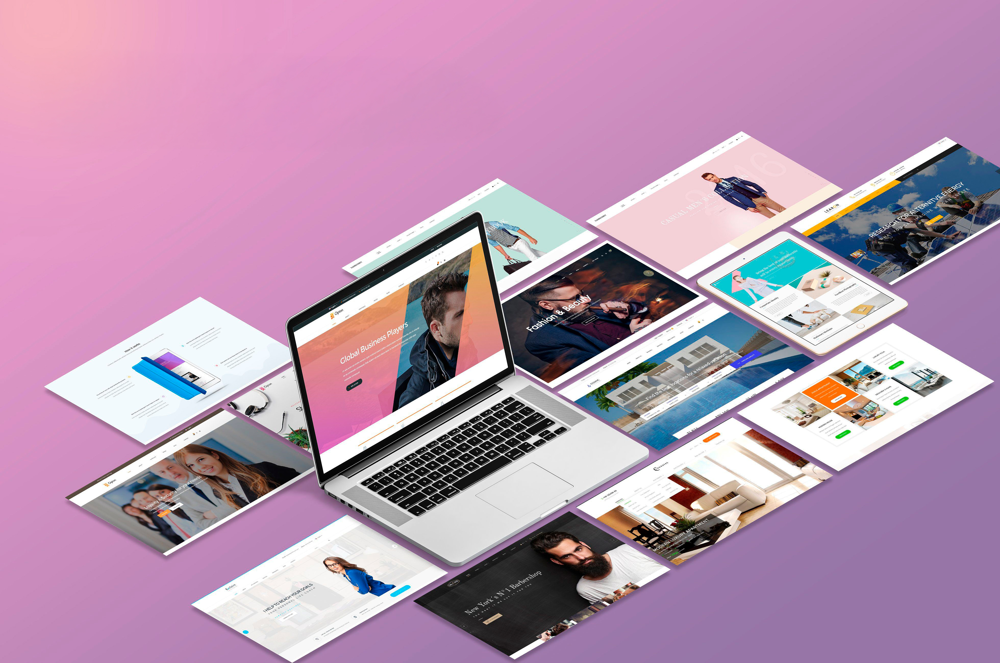

Construção de Portfólio Digital
R$ 3.000,00

Inclui
- Design profissional para causar uma primeira impressão positiva
- Conteúdo de qualidade com fotos e vídeos de alta resolução
- Plataforma de website organizada e acessível
Mensalidade para Divulgação SEO
R$ 550,00/mês
Inclui
- Otimização de Conteúdo para garantir presença online consistente
- Linkbuilding com sites relevantes para aumentar tráfego orgânico
- Análise de Desempenho e ajustes constantes
Descrição do Portfólio Digital
Destaques do Portfólio
- Vídeos de apresentações ao vivo
- Fotos de aulas e workshops
- Informações detalhadas sobre seu currículo
Funcionalidades-Chave
- Agendamento de aulas online
- Formulário de contato para novos alunos
- Integração com Mídias Sociais
Benefícios da Presença Online
Alcance Global
Atinga uma audiência muito maior, sem limitações geográficas
Credibilidade Profissional
Transmita confiança e expertise para atrair novos clientes
Oportunidades Expandidas
Abra portas para aulas online e parcerias estratégicas
Investimento em Conteúdo de Qualidade
- Fotos atraentes de aulas e workshops
- Produção de artigos e tutoriais relevantes

Métricas de Desempenho e Análise
Acompanhamento de métricas como tráfego do site, tempo de permanência, taxa de conversão e posicionamento nos resultados de busca para avaliar o sucesso das iniciativas e realizar ajustes quando necessário.
Conclusão e Próximos Passos
Este orçamento demonstra que o investimento em um portfólio digital e estratégias de SEO é fundamental para o sucesso de um músico nos dias de hoje. Com um investimento inicial de R$ 3.000 e uma mensalidade de R$ 550 para divulgação, você pode criar uma presença online robusta, atrair novos alunos e clientes, e destacar suas habilidades e experiência.
Próximos Passos
- Aprove o orçamento e inicie a construção de seu portfólio digital
- Lançamento do Portfólio e divulgação nas redes sociais
- Monitoramento e ajustes estratégicos conforme necessário